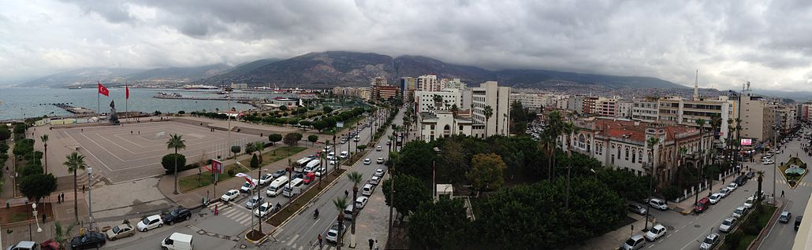
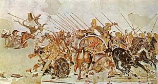
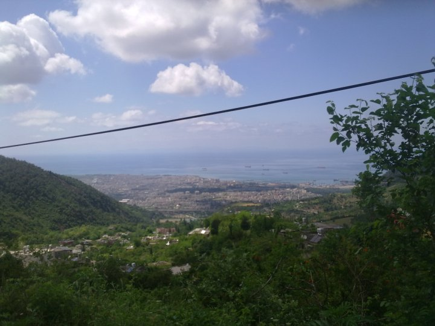

| İskenderun |
- İskenderun
- Tarihçe
- Coğrayfa
- Nüfus
- İklim
- Ekonomi
|  |
Ülke |
Türkiye |
| İl |
Hatay |
| Coğrafi Bölge |
Akdeniz |
| Yüzölçümü |
247 km2 |
| Rakım |
2 m |
| Posta Kodu |
312xx/313xx/314xx |
| İl Alan Kodu |
0326 |
| İl Plaka Kodu |
31 |
|  |
Şehrin kuruluşu tarih öncesi devirlere dayanmaktadır. Karaağaç yöresinde Telliköy adını taşıyan höyükte Arkeolog Mc. Evan'ın bulduğu bazı çanak çömlek parçaları buranın antik çağ öncesi yerleşime açıldığını göstermektedir. MÖ 2000'li yıllarda burada Hititler'e bağlı Kadu Beyliği'nin kurulduğu bilinmektedir (Kadu, Hititçe körfez anlamına gelmektedir.). MÖ 1200'lü yıllardan önce Fenikeliler burada "Myriandrus" adıyla bir koloni kurdular. Burası MÖ 1200'den sonra merkezi Reyhanlı olan Hattini krallığına bağlandı. MÖ 7. yüzyılda Hurriler'in eline geçen İskenderun ve çevresi MÖ 6. yüzyılda Perslerin eline geçmiştir. |
Şehrin batı bölümünü Akdeniz çevreler, doğusu ise Nur Dağları'na dayamış bir haldedir. İskenderun Körfezi'nin güneybatıdan gelip kuzeye devam ettiği ovada yerleşmiştir. Nur Dağları'nın eteklerinde, genişliği 5 km²’yi bulan alan üzerinde kurulmuş olan İskenderun'un yüzölçümü 247 km²'dir. 37 derece kuzey enlemi ile 36-37 derece doğu meridyenleri üzerinde yer almaktadır. Kara, deniz ve hava ulaşımına elverişli bir kenttir. Yörenin kuraklığı şehrin bu kıvrımlara paralel olarak serilişi, ayrı bir özellik kazandırır. İlçe topraklarının kuzeyinde Payas, doğusunda Amanos dağları, güneydoğusunda Belen, güneyinde Arsuz ve batısında Akdeniz bulunur. İskenderun Körfezi ise Akdeniz'in Hatay ve Adana illeri arasına sokulmuş olan en doğu noktasıdır. Kara ve deniz ulaşımında hizmetlerin oldukça gelişmiş olduğu bölgede ticaret büyük öneme sahiptir. Adını aldığı İskenderun ilçesinde bulunan liman, Türkiye'nin Akdeniz kıyısında bulunan en büyük ikinci limanıdır. |
 |
İskenderun, limanı ve sahip olduğu sanayisi ile Türkiye çapında büyük önem taşır. İskenderun'un nüfusu 1950-1980 yılları arasında %274 oranında artmıştır. Böylece ilde en fazla nüfusu barındıran İskenderun aynı zamanda nüfusu en hızlı büyüyen ilçe de olmuştur. Nüfus yoğunluğu ve endüstrisi açısından Hatay’ın ve özellikle Türkiye’nin en büyük ilçelerinden biridir. Türkiye İstatistik Kurumu'nun güncel adrese dayalı nüfus kayıt sistemi verilerine göre şehirdeki toplam nüfus yaklaşık 244.970 olarak tespit edilmiştir. Yapılan son nüfus sayımına göre ilçede 121.136 kadın ve 123.834 erkek yaşamaktadır. Nüfus miktarı alınan göçlerle hızla artmaktadır. 1974 yılındaDemir ve Çelik Fabrikası'nın üretime geçmesiyle İskenderun, yoğun göç almıştır. Bu göçlerin temel sebebi, sanayi alanındaki iş imkânlarıdır.
| Yıl |
Toplam |
Şehir |
Kır |
| 1965 |
118.793 |
69.382 |
49.411 |
| 1970 |
134.705 |
79.297 |
55.408 |
| 1975 |
173.816 |
107.437 |
66.379 |
| 1980 |
209.815 |
124.824 |
84.991 |
| 1985 |
261.644 |
152.096 |
109.548 |
| 1990 |
259.475 |
154.807 |
104.668 |
| 2000 |
287.384 |
159.149 |
128.235 |
| 2007 |
306.594 |
177.294 |
129.300 |
| 2008 |
304.891 |
176.374 |
128.517 |
| 2009 |
318.540 |
190.279 |
128.261 |
| 2010 |
331.697 |
201.183 |
130.514 |
| 2011 |
317.751 |
184.593 |
133.158 |
| 2012 |
318.780 |
184.833 |
133.947 |
| 2013 |
245.083 |
245.083 |
- |
| 2014 |
244.970 |
244.970 |
|
| İskenderun'da Akdeniz iklimi görülür. Yaz sıcaklığı güneş ışınlarının düşme açısına; kuraklık ise alçalıcı hava hareketlerine bağlıdır. En sıcak ay ortalaması 32-34 °C, en soğuk ay ortalaması 10-12 °C dir. Yıllık sıcaklık ortalaması 18 °C dir. Kar yağışı ve don olayı çok ender görülür. Yılda ortalama kar yağan gün sayısı 0,1, dolulu gün sayısı ise 1,8'dir. Açık gün sayısı 88,3, bulutlu gün sayısı 225,8'dir. Yılda 51,2 gün ise kapalı geçmektedir. En fazla yağış kışın, en az yağış yazın düşer. Kışın görülen yağışlar cephesel kökenlidir. Cephesel yağışlar en fazla bu ikimde görülür. Yıllık yağış miktarı yükseltiye göre değişir. Ortalama 600-1000 mm arasındadır. Yağış rejimi düzensizdir. |
| Ortalama Veriler |
| Aylar |
Ocak |
Şubat |
Mart |
Nisan |
Mayıs |
Haziran |
Temmuz |
Ağustos |
Eylül |
Ekim |
Kasım |
Aralık |
| Ortalama Sıcaklık (°C) |
11,8 |
12,2 |
14,7 |
18,3 |
21,9 |
25,2 |
27,8 |
28,4 |
26,5 |
22,4 |
17,1 |
13,2 |
| Ortalama En Yüksek Sıcaklık (°C) |
15,4 |
16,0 |
18,5 |
22,3 |
25,4 |
28,2 |
30,5 |
31,3 |
30,1 |
27,0 |
21,5 |
16,9 |
| Ortalama En Düşük Sıcaklık (°C) |
8,7 |
8,9 |
11,1 |
14,6 |
18,3 |
21,9 |
24,9 |
25,5 |
23,1 |
18,7 |
13,7 |
10,2 |
| Ortalama Güneşlenme Süresi (Saat) |
4,2 |
5,1 |
6,1 |
7,2 |
9,0 |
10,3 |
9,5 |
9,3 |
8,8 |
7,5 |
5,6 |
4,0 |
| Yağışlı Gün Sayısı |
5,8 |
6,5 |
7,6 |
11,2 |
15,0 |
10,6 |
5,5 |
4,1 |
4,0 |
8,3 |
6,9 |
6,2 |
|
| En Yüksek Sıcaklık (°C) |
22,4 |
26,4 |
31,7 |
36,0 |
40,0 |
37,6 |
36,5 |
38,8 |
40,0 |
37,4 |
31,2 |
25,2 |
| En Düşük Sıcaklık (°C) |
- 0,8 |
- 0,3 |
0,4 |
5,1 |
11,2 |
14,8 |
18,6 |
18,7 |
15,4 |
2,5 |
2,4 |
0,8 |
|
|
İskenderun Demir ve Çelik A.Ş, Türkiye’nin güneyinde İskenderun Körfezi'nde bulunan en büyük demir-çelik işletmesidir. Tesisler İskenderun'un 17 km. kuzeyinde Karayılan ve Yakacık yöresinde, sosyal tesisleri ile birlikte toplam 16.757.238 m² alan üzerine kurulmuştur. İsdemir; Türkiye’nin kuruluş tarihi itibari ile üçüncü, uzun mamul üretimi açısından ise en büyük entegre tesisidir. Kuruluş çalışmalarına 1966 yılında başlanan İsdemir, 25 Mart 1967 tarihinde Sovyetler Birliği ile yapılan Teknik ve Ekonomik İşbirliği anlaşması kapsamında Tiajpromexprot firmasına projeler yaptırılmış, aynı firma ile 10 Ekim 1969 tarihinde fabrika kuruluş anlaşması gerçekleştirilmiştir. 1,1 milyon ton/yıl blum kapasitesinde kurulması planlanan tesisin temeli 3 Ekim 1970 tarihinde atılmıştır. İnşaat ve montaj faaliyetlerinin tamamlanmasını müteakiben üretim üniteleri 1975 yılından itibaren kademeli olarak işletmeye alınmıştır. |
|

|

|
|
|